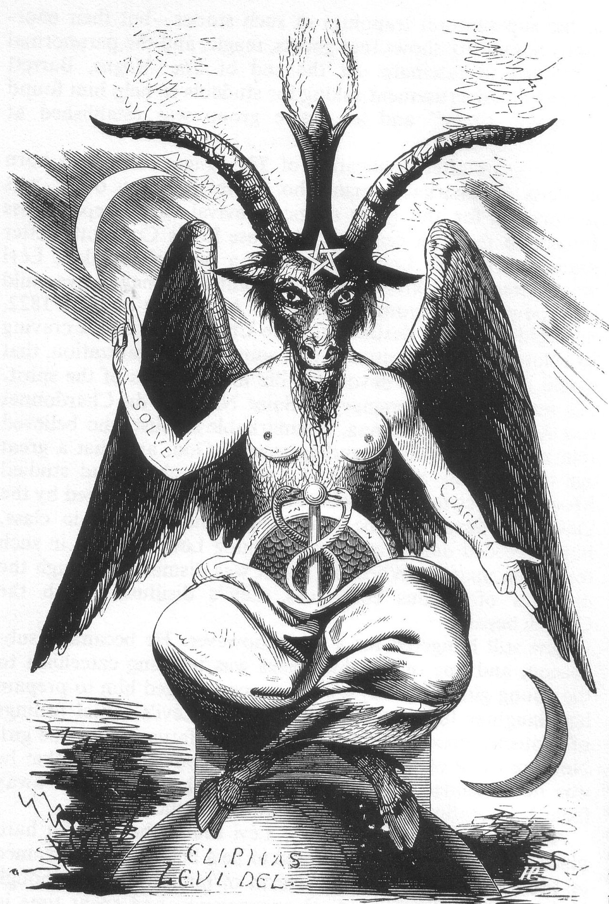

The Demon of Occult
Via Wikipedia — "Baphomet"; image license per its Wikimedia Commons file page
You're standing in a library that shouldn't exist, deep beneath a city you thought you knew.
You're standing in a library that shouldn't exist, deep beneath a city you thought you knew. In the center of the room is a statue: a winged, goat-headed figure, one arm raised to the sky, the other pointed to the earth. It is both male and female, both human and animal, both light and shadow. The inscription beneath it reads: 'Solve et Coagula' — dissolve and coagulate. You realize, with a vertigo that feels like falling upward, that this thing is not evil. It is the most honest depiction of the universe you have ever seen. And you are not sure what to do with that.
Baphomet is one of the most contested symbols in Western esotericism — a being who has been called a demon, a god, a principle, and a hoax. The name first appears in 1098 in a letter by a Crusader, describing a supposed Muslim idol. In 1307, the Knights Templar were accused by the French king and the Inquisition of worshipping 'Baphomet,' and under torture, some knights confessed to venerating a bearded head or a cat-like idol. The charges were almost certainly fabricated to justify seizing Templar wealth, but the name stuck. For centuries, 'Baphomet' was an obscure historical footnote.
It was Éliphas Lévi, a 19th-century French occultist, who gave Baphomet its definitive form and meaning. In his 1856 book 'Dogme et Rituel de la Haute Magie,' Lévi published the famous illustration: a winged, androgynous figure with a goat's head, a pentagram on its forehead, one arm pointing up (toward white magic and the divine), one pointing down (toward black magic and the material), with the Latin words 'Solve' (dissolve) and 'Coagula' (coagulate) on its arms. This was not a depiction of Satan. It was a symbol of the reconciliation of opposites — light and dark, male and female, spirit and matter, creation and destruction. Baphomet represented the alchemical process of spiritual transformation: break yourself down, then rebuild yourself in a higher form. The Church of Satan later adopted a version of Baphomet (the Sigil of Baphomet) as its official symbol, but the original Lévi Baphomet is far more complex than a simple devil-figure.
The name 'Baphomet' first appears in a letter from Anselm of Ribemont in 1098. It reappears during the Templar trials (1307-1314), where tortured knights gave wildly inconsistent confessions about worshipping an idol called Baphomet — some described it as a bearded head, some as a cat, some as a three-faced statue. The charges were politically motivated, and no physical idol was ever produced. The name was largely forgotten until the 19th century, when Joseph von Hammer-Purgstall proposed (incorrectly) that the Templars were secret Gnostics and that 'Baphomet' derived from the Greek words 'baphe' (baptism) and 'metis' (wisdom). Éliphas Lévi synthesized these threads into his 1856 illustration, creating the goat-headed androgyne that defines all modern images of Baphomet. Aleister Crowley later adopted Baphomet as a symbol of the magical will and incorporated the figure into Thelema.
Lévi's Baphomet is a seated, winged figure with a goat's head, a pentagram on its forehead, a torch between its horns (representing universal intelligence), and human breasts and torso. One arm is raised toward a white crescent moon (Chesed, mercy), and one points down toward a black crescent moon (Geburah, severity). The arms bear the words 'SOLVE' and 'COAGULA.' Its lower body is covered in scales or a cloth, and it has cloven hooves or human feet (varying by depiction). It has an erect caduceus (the Hermetic staff of balance) in its lap. It is androgynous: the breasts are female, the phallic caduceus is male, the face is animal. The whole figure represents the union of all opposites — not a monster but a map of the universe. Later Satanist versions (adopted by Anton LaVey's Church of Satan) add a goat head within an inverted pentagram, Hebrew letters spelling 'Leviathan,' and a more explicitly demonic aesthetic.
Baphomet is a symbol, not a being — and its power is in what it represents. As a principle, Baphomet is the reconciliation of opposites, the alchemical process of spiritual transformation, and the hidden unity beneath apparent dualities. In occult tradition, meditating on the image of Baphomet is said to awaken latent magical abilities, teach the balance of opposing forces, and reveal the path to spiritual evolution. The upward-pointing arm draws down divine energy; the downward arm grounds it in matter. The pentagram represents the mastery of spirit over the four elements. The torch of intelligence illuminates the darkness of ignorance. Baphomet is not worshipped in mainstream Satanism as a god but serves as a symbol of individualism, rebellion against arbitrary authority, and the pursuit of knowledge.
Baphomet does not 'behave' — it is a symbol. But as a mythological entity, Baphomet has been assigned various behaviors by different traditions. In Christian demonology, it was a demon of heresy and corruption. In modern Satanism, it represents the carnal, material self — the animal nature that Christianity represses. In esoteric traditions, it is a teacher, a revealer of hidden truths, a guide through the alchemical process of self-transformation. It does not attack, deceive, or tempt; it reveals. The horror of Baphomet is not in what it does but in what it represents: the collapse of comfortable dualities, the revelation that good and evil, male and female, divine and bestial are not opposites but poles of a single spectrum.
As a symbol, Baphomet's only weakness is misinterpretation. It can be reduced to a simple devil-figure, stripped of its esoteric complexity. In traditions that treat it as a demonic entity, it is vulnerable to the usual methods: exorcism, holy water, sacred symbols, the authority of divine figures. The Church of Satan's Sigil of Baphomet was designed to provoke — the 'weakness' is that this provocative function overrides the deeper symbolic meaning for most viewers. Baphomet cannot be 'killed' because it never lived — it is an idea, and ideas are bulletproof.
⛧ The name 'Baphomet' may be an Old French corruption of 'Mahomet' (Muhammad) — the Crusaders accused Muslims of idol-worship, and the Templars later faced the same charge.
⛧ Éliphas Lévi's Baphomet was deliberately androgynous — 'It is the goat of the Sabbath, the Baphomet of the Templars, the magical agent... it is the great hierophant.'
⛧ The 'solve et coagula' inscription means 'dissolve and coagulate' — an alchemical formula: break down the self, then rebuild it in a purer form.
⛧ The Church of Satan was founded by Anton LaVey in 1966 — he adopted Baphomet as the official sigil but explicitly stated that Satanists do not worship Satan or Baphomet as real beings.
⛧ The Satanic Temple's Baphomet statue includes two smiling children gazing up at the figure — a deliberate rebuke to narratives of Satanic child abuse that fueled the 1980s 'Satanic Panic.'
You find a journal in your grandmother's attic, written in a language you don't recognize. You translate one l…
MesopotamianPazuzuThe dust storm is coming. You can smell it — a dry, electric scent like lightning hitting old bones. Everyone …
HinduKaliThe battlefield stretches to every horizon, soaked in blood. The demon Raktabija is winning — every drop of hi…
Beings of the same nature, imagined by other peoples.
Rangda is the terrifying queen of demons (leyak) — the witch-widow who commands black magic and chaos. In the …
demonicRemorhazA massive centipede-like creature, 50 feet long, with a chitinous blue-white exoskeleton and a back that glows…
ChineseOx-Head and Horse-FaceOx-Head and Horse-Face are the first faces the Chinese dead see: a pair of underworld constables, one with the…
Christian (medieval demonology); derived from Moabite Baal-PeorBelphegorBelphegor (or Belfagor) is the demonic embodiment of sloth and ingenious laziness — a devil who tempts humanit…
Baphomet is the central symbol of modern Satanism and a touchstone of Western occultism. It represents the rebellion against religious authority that defines modern secular culture. The Satanic Temple, a non-theistic religious organization, has adopted Baphomet as its primary icon — a seven-foot bronze Baphomet statue was proposed for display alongside the Ten Commandments on Oklahoma state capitol grounds as a statement about religious pluralism (and as satire). Baphomet has been used in moral panics about Satanism (the 1980s 'Satanic Panic'), heavy metal album covers (Venom, Slayer, countless others), and countercultural iconography. It is simultaneously one of the most recognized and most misunderstood symbols in the world.
Baphomet is ubiquitous in counterculture. The Sigil of Baphomet is the official logo of the Church of Satan and appears on merchandise, album covers, and tattoos worldwide. The Satanic Temple's Baphomet monument has traveled across America as a political statement. In film, Baphomet appears in horror movies (often conflated with Satan) and occasionally in more nuanced roles ('As Above, So Below' references the solve et coagula concept). The Netflix series 'Sabrina' features Baphomet as a dark deity. Modern esoteric practitioners continue to work with the Lévi image as a meditative tool. Baphomet's enduring power lies in its ambiguity — a Rorschach test onto which viewers project their fears and hopes about religion, rebellion, and the nature of good and evil.
Strong sourcing with some gaps or single-tradition dependence. Primary attestation: Western Esotericism.
The Satanic Temple's Baphomet statue includes two smiling children gazing up at the figure — a deliberate rebuke to narratives of Satanic child abuse that fueled the 1980s 'Satanic Panic.'
Continue the descent
You find a journal in your grandmother's attic, written in a language you don't recognize. You translate one l…
follows the threadArs Goetia / Solomonic DemonologyBarbatosEighth spirit, a Duke commanding 30 legions. Barbatos appears when the sun is in Sagittarius, accompanied by f…
same wing of the ArchiveArs Goetia / Solomonic DemonologySamigina (Gamigin)Fourth spirit of the Ars Goetia, a Marquis ruling 30 legions. Gamigin (also Samigina) appears in the form of a…
same wing of the Archive